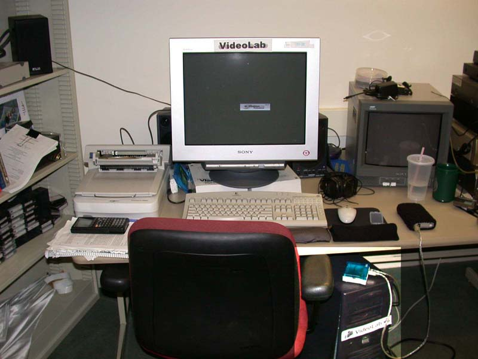

The "Computer"

So far, everything that we've looked at allows a person to interact with the computer by either giving information to the computer
or getting it from the computer. But what does all the work? What part or parts of the computer actually compute?
The parts of the computer that do everything that you ask it to do are contained within a box called the case. You can see VideoLab's case in the brightened region in the image above.
Inside this box, many different electronic pieces work together to perform the requested tasks. On the next page, I
will show you the inside of VideoLab's case. You will get to see these different electronic pieces, and I will explain
what some of them are for.